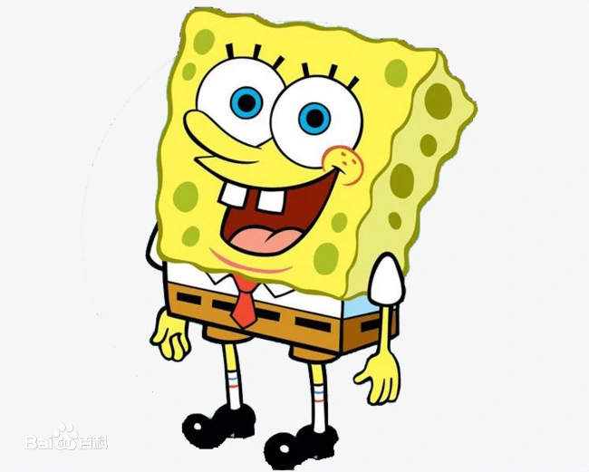

导演介绍

《海绵宝宝》
原名海绵鲍勃，出生于1986年7月14日
是这部动画的主角，
他是由海洋生物学家和动画师海伦·伯格设计，原配音汤姆·肯尼。
海绵宝宝生活在太平洋海底一座被称为比基尼海滩的水下城市的一个菠萝屋里，是一个快乐、天真、善良、热爱生活、充满活力、乐于助人的海绵
但有时也因为好奇和贪玩闯祸。他以一名厨师的身份在蟹堡王工作，他做蟹黄堡非常熟练。
海绵宝宝有时的天马行空也让别人很烦恼(特别是他身边的章鱼哥)。
原名海绵鲍勃，出生于1986年7月14日
是这部动画的主角，
他是由海洋生物学家和动画师海伦·伯格设计，原配音汤姆·肯尼。
海绵宝宝生活在太平洋海底一座被称为比基尼海滩的水下城市的一个菠萝屋里，是一个快乐、天真、善良、热爱生活、充满活力、乐于助人的海绵
但有时也因为好奇和贪玩闯祸。他以一名厨师的身份在蟹堡王工作，他做蟹黄堡非常熟练。
海绵宝宝有时的天马行空也让别人很烦恼(特别是他身边的章鱼哥)。